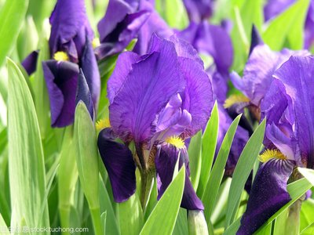

The Ephemeral Blue Flax
I am continually amazedat the beautiful,delicate Blue Flaxthat somehow took hold in my garden.The are awash in color every morning,yet not a single flower remians by the afternoon.The are the very definition of ephemeral.
©Blue Flax Society.